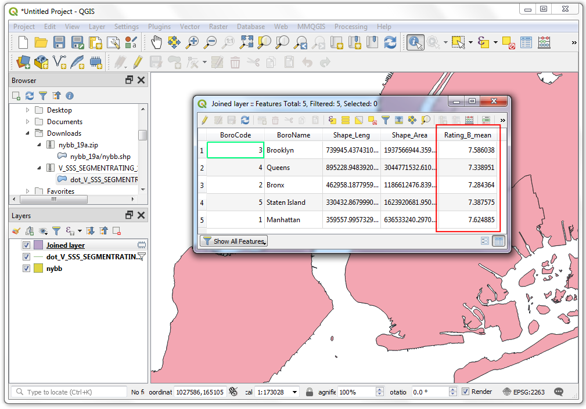
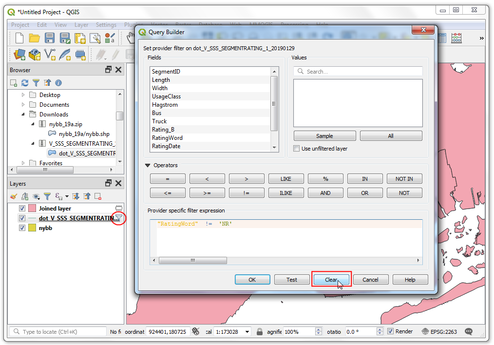

Realizar Uniones Espaciales (QGIS3)¶
La Unión Espacial es un clásico problema SIG - transferir atributos de una capa a otra en base a su relación espacial. En QGIS, esta funcionalidad está disponible a través del algoritmo Unir Atributos por Ubicación.
Vista general de la tarea¶
Usaremos 2 capas - Un archivo shape de límites de distritos de la ciudad de Nueva York y otro archivo shape de la Valuación de Pavimento de Calle para todas las calles de la ciudad de Nueva York. La primera tarea será encontrar la valuación promedio de calles en cada distrito usando un algoritmo de unión espacial con resumen. La segunda tarea será agregar el nombre del distrito a las entidades calle a través de una unión espacial uno-a-muchos.
Otras habilidades que aprenderá¶
Crear filtros para excluir temporalmente ciertas entidades del cálculo.
Obtener los datos¶
El Portal de Datos Abiertos NYC es una fuente excelente de datos libres para la ciudad de Nueva York.
Descargue el archivo zip Límites de Distrito usando la opción Exportar en el portal.

Descargue el archivo zip Valuación de Pavimento de calle usando la opción Exportar en el portal.

Para su comodidad, puede descargar directamente una copia de los conjuntos de datos de los enlaces abajo:
Fuente de Datos [CITYOFNY]
Procedimiento¶
Localice el archivo``nybb_19a.zip`` en el Explorador QGIS y expándalo. Seleccione la capa
nybb_19a/nybb.shpy arrástrela a la pantalla. Ésta es una capa polígono que representa los límites de distrito en la ciudad de Nueva York.

A continuación, localice el archivo
V_SSS_SEGMENTRATING_1.zipy expándalo. Seleccione la capadot_V_SSS_SEGMENTRATING_1_20190129.shpy agréguela a la pantalla. Ésta es una capa línea de todas las calles en la ciudad.

Examinenos los atributos disponibles para cada entidad de la capa
dot_V_SSS_SEGMENTRATING_1_20190129. Clic-derecho y seleccione Abrir Tabla de Atributos.

Notará que el atributo llamado
Rating_Bque tiene valores en el rango 0-10 representa la valuación del segmento de calle. El atributo RatingWord` tiene una valuación descriptiva. Podemos usar el campoRating_Bpara calcular la valuación promedio.

Puede haber notado que algunas entidades tienen una valuación de
NR. Éstos son los segmentos que no están valuados. Incluirlos en nuestro análisis no sería correcto. Antes de que hagamos la unión espacial, establezcamos un Filtro para excluir estos registros. Clic-derecho a la capadot_V_SSS_SEGMENTRATING_1_20190129y seleccione Filtro.

En el Constructor de Consulta, escriba la siguiente expresión para seleccionar todos los registros que no están clasificados
NR. También puede construir la expresión interactivamente haciendo clic en Campo, Operador y seleccionando el Valor apropiado. Clic en :guilabel:`Aceptar.
"RatingWord" != 'NR'
Notará que la capa
dot_V_SSS_SEGMENTRATING_1_20190129ahora tiene un icono de filtro que indica que hay un filtro activo aplicado a esta capa. Ahora podemos hacer una unión espacial que usa esta capa. Vaya a .

Busque y localice el algoritmo . Haga doble clic para iniciarlo.

En el diálogo Unir atributo por ubicación (resumen), seleccione
nybbcomo la Capa de entrada. La capa de callesdot_V_SSS_SEGMENTRATING_1_20190129será la Capa de unión. Puede dejar el Predicado de geometría en su predeterminadoIntersecta. Clic el botón … junto a Campos a resumir.

Nota
Una sugerencia para ayudarle a seleccionar las capas correctas de entrada y unión: La capa de entrada es aquella que será modificada con nuevos atributos en la unión espacial. Como queremos que el campo de clasificación promedio sea agregado a la capa de distrito, ésta será la capa de entrada.
Seleccione
Rating_By clic en Aceptar.

De forma similar, clic en el botón … junto a Resúmenes a calcular.

Seleccione
mediacomo el operador de resumen y clic en Aceptar. Ahora estamos listos para iniciar el procesamiento. Clic en Ejecutar.

El algoritmo de procesamiento trabajará a través de los objetos espaciales y aplicará la unión espacial. Verifique que el trabajo de procesamiento sea exitoso y clic en Cerrar.

De vuelta en la ventana principal QGIS, verá agregada una nueva capa
Joined layera la pantalla. Abra la tabla de atributos para esta capa. Verá agregada una nueva columnaRating_B_meana la capa entrada de distritos con la clasificación promedio de todas las calles que se intersectan con ese objeto espacial.

Ahora podemos realizar una operación inversa. Algunas veces nuestro análisis requiere obtener atributos de otra capa en base a la relación espacial pero sin calcular ningún resumen. Podemos usar el algoritmo
Unir atributos por ubicación (resumen)para tal análisis. La tarea es agregar el nombre del distrito a cada objeto en la capa de calles en base a en cuál polígono de distrito intersecta. Antes de ejecutar esta algoritmo, quitemos el filtro de la capadot_V_SSS_SEGMENTRATING_1_20190129. Clic el icono de filtro y presione Limpiar en Constructor de Consulta. Clic en Aceptar.

Active
Joined layeren el panel Capas. Encuentre el algoritmo en la Caja de Herramientas Procesos y haga doble clic para iniciarlo.

Seleccione
dot_V_SSS_SEGMENTRATING_1_20190129como la Capa de entrada ynybbcomo la Capa de unión. Puede dejar el Predicado de geometría al predeterminadoIntersecta. Clic el botón … junto a Campos a agregar y seleccioneBoroName. Clic en Aceptar.

El segmento de línea puede cruzar el límite de distrito, por lo que escogemos para el Tipo de unión
Crear objetos separados para cada objeto identificado (uno-a-muchos). Clic en Ejecutar.

Una vez que termine el procesamiento, abra la tabla de atributos de la recién agregada
Joined layer. Verá que hay un nuevo atributoBoroNameagregado a cada objeto de calle.

If you want to give feedback or share your experience with this tutorial, please comment below. (requires GitHub account)